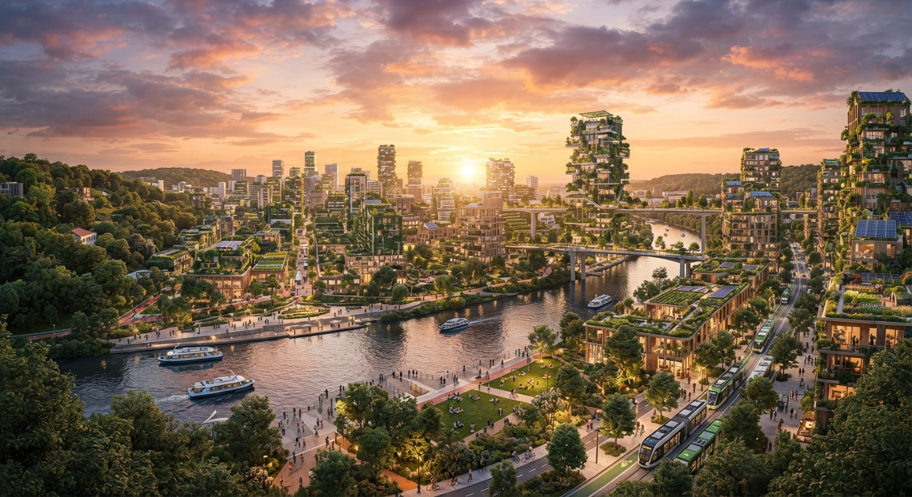
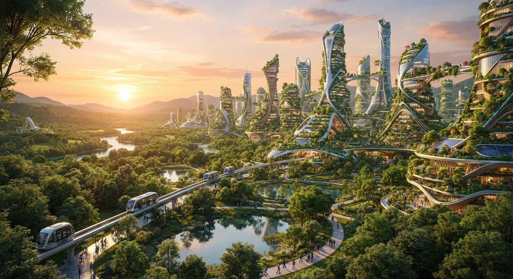
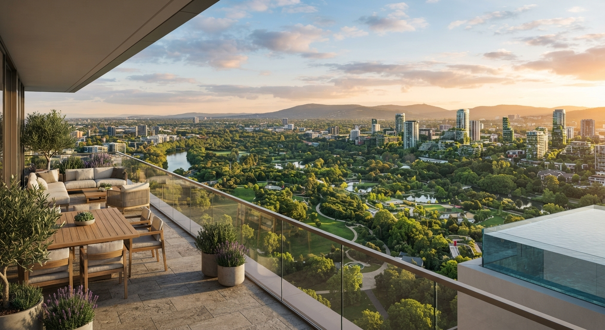
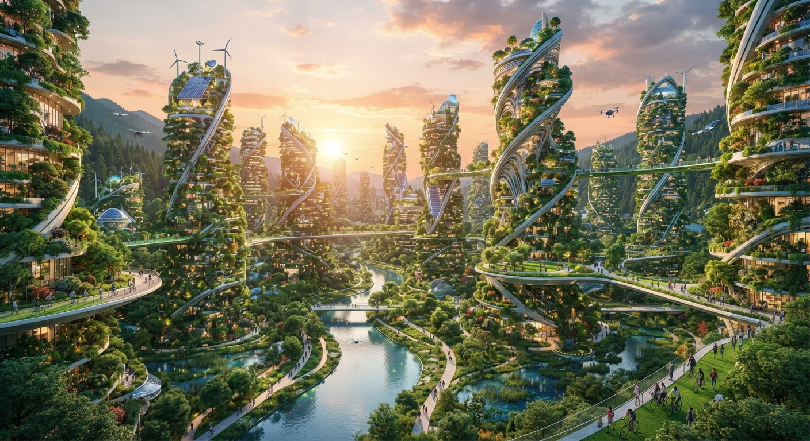
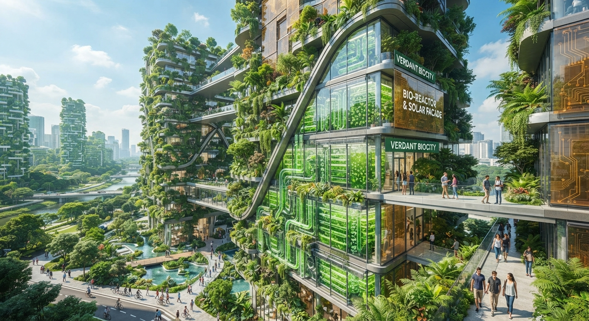
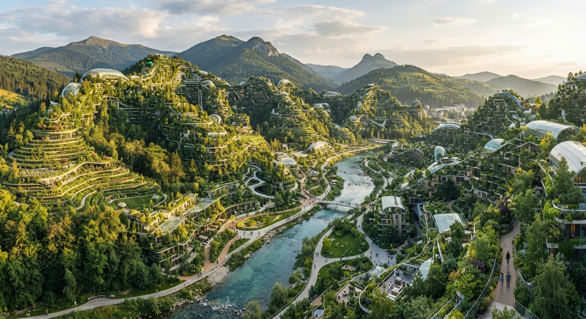
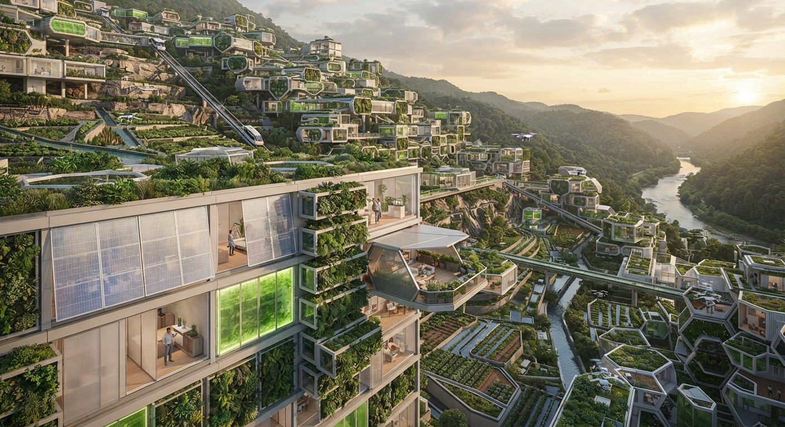
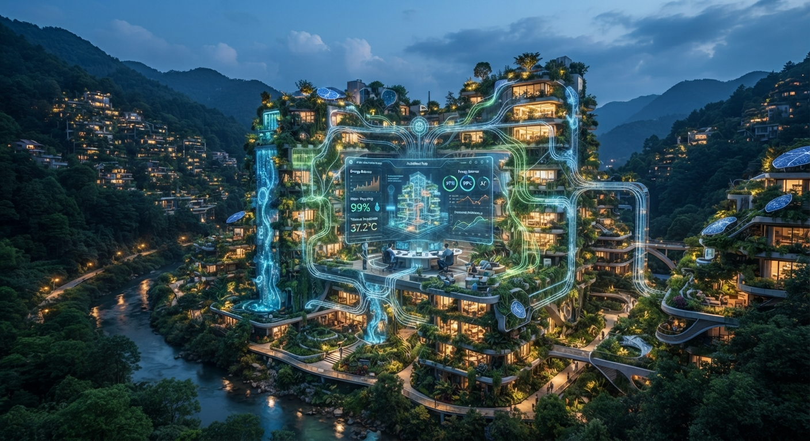

Архітектурна екосистема майбутнього |
Біофільна розкіш |
Еко-урбанізм |
Архітектура майбутнього |
Технологічний зв'язок із природою |
Інженерна досконалість |
 |
 |
 |
| Архітектурна екосистема майбутнього — це концепція, де будівлі, природа та технології зливаються в єдиний, самовідновлюваний організм. Замість звичних міських бетонних джунглів майбутнє пропонує міста-ліси, де кожен будинок виконує функцію дерева: виробляє кисень, очищує воду, генерує енергію та взаємодіє з мікрокліматом планети. |
 |
Як це виглядатиме? |
Живі будівлі:фасади покриті вертикальними лісами, біореакторами з водоростями та напівпрозорими сонячними панелями з органічних матеріалів. Інтеграція рельєфу:споруди будуть вплетені в природний ландшафт — гори, пагорби та річища рік, не порушуючи, а доповнюючи екосистеми. Мобільність і модульність:архітектура зможе адаптуватися під потреби мешканців та сезони (змінювати планування, пропускну здатність повітря, світлопроникність). Цифрова нервова система:штучний інтелект керуватиме ресурсами будівлі в реальному часі, балансуючи витрати енергії та води так само, як живий організм регулює температуру тіла. |
 |
 |
 |
 |
||||
Плюси (Чим це зручно):
|
Мінуси (Чим це незручно):
|
Вплив на природу:
|
Враження людей та загальна користь:Люди почуватимуться ближчими до природи, навіть перебуваючи у центрі мегаполіса. Зникне відчуття ізольованості від довкілля, з'явиться глибше усвідомлення своєї ролі у збереженні планети. Це викликатиме почуття спокою, захищеності та гармонії, але водночас вимагатиме від суспільства високої екологічної дисципліни.Це не просто архітектурний стиль, а єдиний шлях до виживання людства в умовах зміни клімату, що дозволяє поєднати високий рівень технологічного комфорту зі збереженням життєздатності Землі. |